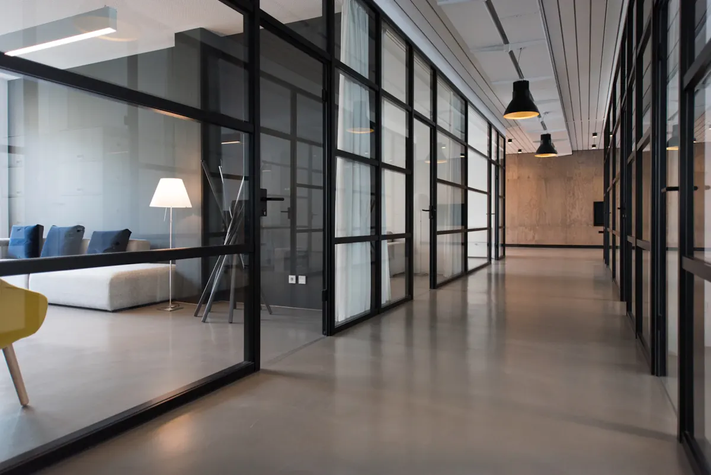

Projekt koncept / 06
NorthstarKoncept faqeje për kompani
Koncept korporativ që zhargonin e zëvendëson me qartësi, strukturë dhe një pikëpamje njerëzore.
 Northstar / Koncepti 06
Northstar / Koncepti 06
01 / Përmbledhje
Përmbajtje,
pa zhurmë.
Shërbimet e ndërlikuara nuk kërkojnë faqe të ndërlikuara. Kërkojnë një qëndrim të qartë dhe disiplinë për t’i qëndruar besnik.
Northstar është firmë e trilluar strategjie, këshillimi dhe investimesh. Koncepti synon ta bëjë të qartë një model të ndërlikuar shërbimesh — dhe të ndihen njerëzit që qëndrojnë pas tij.
Në vend të një muri me kualifikime, faqja fillon me një pikëpamje. Shërbimet shpjegohen me gjuhë të thjeshtë, analizat kanë vendin e tyre të dukshëm dhe kontakti kurrë nuk fshihet. Rezultati është korporativ pa qenë i ftohtë: serioz, i drejtpërdrejtë dhe njerëzor në çdo hap.
Qëllimi i dizajnit
Ngjyrat e përmbajtura të rrasës dhe letrës, si dhe shkronjat sans-serif të drejtpërdrejta, e mbajnë tonin të qetë. Fotot e fuqishme arkitekturore i japin firmës madhësi; panelet editoriale i japin zë. Në telefon, faqosja e dendur kthehet në një rrëfim të qartë e linear.
Qartësi që në shikim të parë
Oferta, shërbimet dhe hapi i radhës kuptohen brenda pak sekondash.
Përmbajtje, jo zhargon
Gjuha e thjeshtë dhe detajet e strukturuara zëvendësojnë fjalët boshe korporative.
Zë njerëzor
Momente të vogla editoriale e mbajnë përvojën të afërt edhe në shkallë të madhe.
02 / Pamja në ekrane
Një ide, e njëjtë
në çdo ekran.
Faqosja është menduar si një sistem i vetëm, jo si faqe kompjuteri e ngjeshur në telefon. Rendi, ritmi dhe karakteri ruhen nga ekrani i gjerë deri te 390 piksel.

03 / Gjuha vizuale
Rrasë dhe
dritë dite.
Rrasa dhe mjegulla sjellin peshë dhe qetësi. Letra e mban ndërfaqen të hapur, ndërsa një blu e matur tregon hapin e radhës.
Clarity at scale.
Të gjitha shkronjat ruhen në këtë faqe dhe përdoren njësoj në koncept dhe në faqe.
04 / Detajet
Strukturë, shkallë
dhe dritë dite.
Fotot lëvizin mes madhësisë së qytetit dhe qetësisë së zyrës, duke i dhënë markës edhe ambicie edhe afërsi.

Fotot janë ilustruese dhe përdoren sipas licencës përkatëse. Asnjë foto nuk paraqet punë për klient.
Fillo një projekt